Toolbars¶
There are several types of tool bars. Depending on user preferences, some can be moved to a new location on the application and other can either be displayed or hidden by selecting the 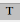 button.
Note: The Toolbar view setting is reset when the application is restarted.
Application Toolbar
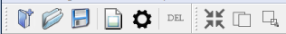
| Create a new project | |
|---|---|
 |
Open an existing project file (project files have the extension .cprj) |
 |
Saves any changes to the current project |
| Open image files to add to the Project Explorer | |
| Open an application settings dialog | |
| 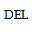 | Delete the current selected items on the Project Explorer |
Starts to process (Compresses, Decompresses or Transcodes) If no items are selected it will auto select all items in the project. |
|
| View image difference for a processed image (sub item) with the original image (branch item) | |
| Generates MIP mapping to a specified minimum Mipmap level for original image (branch item) |
Image View Toolbar
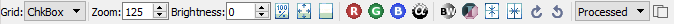
| 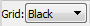 | 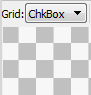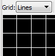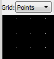 Select the background the image is displayed on (default black) |
|---|---|
| 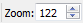 | Zoom into or out of the image using a specific scale (100 = original size) Min setting is 10 and Max is 9999 |
| Displays the image at its original size | |
| Sets the image display to fit the current view | |
| Restore the original image view to default | |
| Toggles the images Red channel on or off | |
| Toggles the images Green channel on or off | |
| Toggles the Images Blue channel on or off | |
| Toggles the Images Alpha channel on or off | |
| Toggles the image from (Black and White) to Color | |
| Toggles inverting the images colors | |
| Mirrors the image horizontally | |
| Mirrors the image vertically | |
 |
Rotates the image clockwise by 90 Degrees |
| Rotates the image counter clockwise by 90 Degrees |
Additional Toolbar options will be displayed when viewing certain type of images, such as an image diff or images with multiple MIP levels
| Increases the brightness of the image | |
|---|---|
| 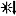 | Decreases the brightness of the image |
| 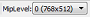 | Displayed when an image has multiple MIP Mapping (0 = original image). The view of any MIP level and size (as width x height) is selectable. |
View Image Diff Toolbar
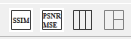
| Displays an Image Difference to the left of two stacked images. Original on top and Processed Image at the bottom. | |
|---|---|
Organizes three image views (Original Image, Image Difference and Processed Image) in a horizontal line |
|
| 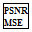 | The Property View displays Peak Signal Noise Ratio and Mean Square Error for the processed image as compared to the original. MSE measures the cumulative squared error between the processed image and original image. (Value of 0 = Original image) PSNR measures the peak error in (dB) – (extremely high value = original image) |
| 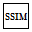 | Structural Similarity Index (SSIM) measures a perceived quality factor from a scale of 0 (= No similarity) to 1 (= Original image). | Each channel of the processed image is indexed with the original and then averaged to a single value. |

{kind=link}
{kind=link}
{kind=link}